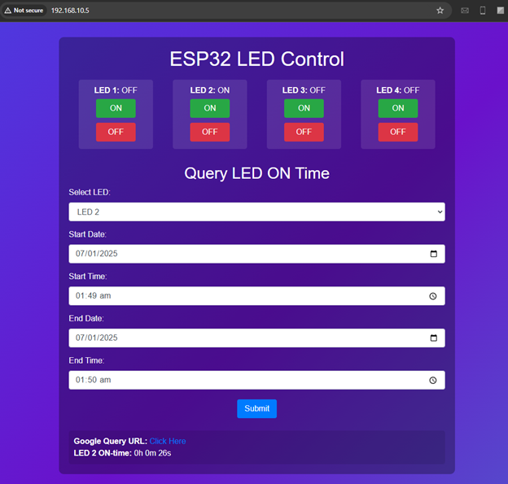
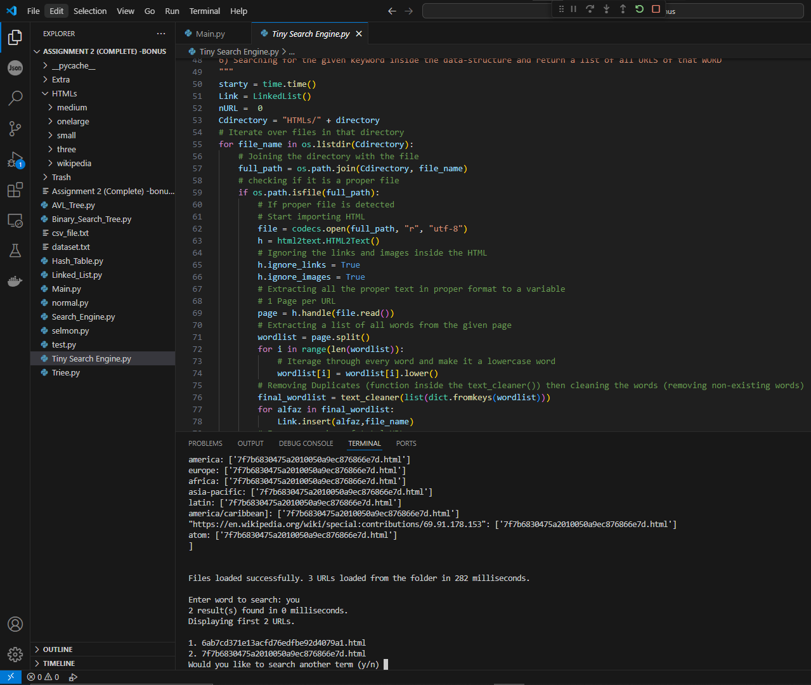

Offensive Security
Web/API testing, vulnerability assessment, OWASP Top 10, Active Directory practice, reporting, remediation guidance, and ongoing HTB/PortSwigger work.
Associate Offensive Security Engineer / Full-stack builder
I am Abdullah Mehtab: a computer science graduate with a mathematics minor, currently working in offensive security at Tkxel. My work sits where web/API pentesting, DevOps, backend systems, SIEM engineering, ML experiments, and human stubbornness collide.
What I do
The portfolio is intentionally split into Work, Labs, CV, and Guestbook. Fewer doors, better rooms.
Web/API testing, vulnerability assessment, OWASP Top 10, Active Directory practice, reporting, remediation guidance, and ongoing HTB/PortSwigger work.
Backend demos, deployment architecture, Docker, Terraform, Ansible, Jenkins, monitoring stacks, dashboards, and enough logs to question reality.
Cyber Sentinel, automated pentest reports, AI admissions chatbot, time-series ML, IoT monitoring, compilers, games, robots, and early chaotic experiments.
Featured work
A low-cost security monitoring SIEM integrating Wazuh, ELK Stack, and Suricata, with deployment automation and email alerting.

ESP32-based logging into Google Sheets through a custom web app, because even LEDs deserve accountability.

A DSA-driven search prototype focused on indexing, retrieval, and making coursework actually do something.
Experience
Authorized web/API assessments, vulnerability research, reporting, OWASP-aligned remediation, and active offensive security practice.
Rotated through BA, UI/UX, development, SQA, cyber, and DevOps with project-based learning in Agile engineering environments.
Led labs, evaluated quizzes and assignments, managed student records, and learned that teaching exposes every weak explanation immediately.
Delivered automation scripts, algorithmic tools, data processing utilities, technical research, and documentation for clients.
Labs
Labs are where blog posts, cyber notes, DevOps experiments, and "I should document this before future me hates present me" entries live.
Open labsGuestbook
Comments are available across the site and can become Supabase-backed with moderation. Until then, they run in local preview mode.
Sign the wall